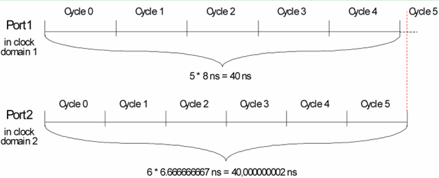

Dealing with rounding problems in multiport setups
Equation based standard definitions of the period length are built up from constants, spec variables, and arithmetical operators. From these definitions, SmarTest calculates the period length as a decimal number. If the definition contains fractions (division operators), this calculation produces values which can have up to 9 decimal places, and must be rounded when the division produces more decimal places or is periodic. This can impair the validity of a test with pure Smart Scale ports (for which see Period resolution for a multiport setup (Smart Scale)) in the following respects.
System clock overflow
Every pure Smart Scale port can have a different clock resolution (abbreviated "ECLK"). For more information on period resolution, clock resolution, and master clock period see Period resolution, clock resolution, and master clock period.
These ECLK periods are derived from certain user period values (or period resolutions specified with the period_res keyword) by division. Now the system clock (abbreviated "SCLK") period must be an integer multiple of all these different ECLK periods. But if the user period values (or period resolutions) contain decimal places, the ECLK periods calculated from them will contain as many or even more decimal places, and may have to be rounded in their turn. Then the corresponding integers can easily become large and (nearly) coprime, so that their least common multiple, and consequently also the SCLK period, will become very large. This will at best slow down the test considerably, and if the calculated value exceeds the maximum allowed SCLK period, the respective specification cannot be used.
Distortion of ratios
This is illustrated by the following figure (which exaggerates the effect to make it visible):

How to avoid rounding problems
There are two ways to avoid the problems indicated above:
Functional changes
- Introduced before SmarTest 6.3.2